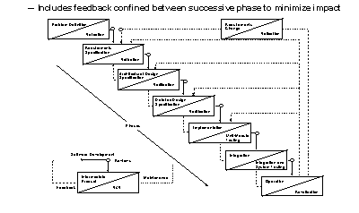

Development Models
Waterfall Method
Incremental Method
The waterfall model is a simplistic sequential model.
It assumes that development can follow a step-by-step process.
You never go back to previous steps.
